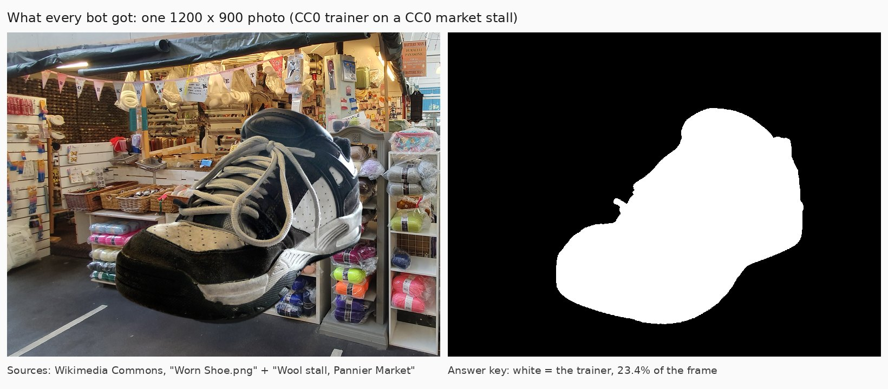
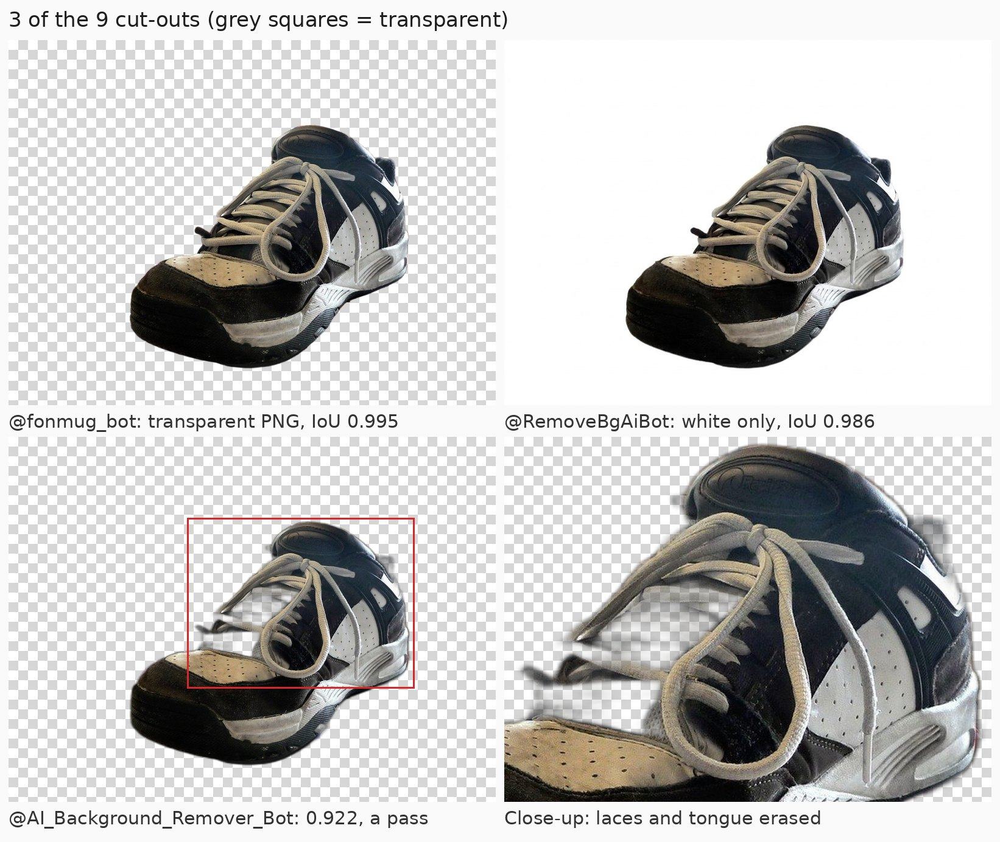

Telegram Background Remover Bots: 54 Tested, 9 Did the Job
Search Telegram for "background remover" and you get a long list of bots that all promise the same thing: send a photo, get it back without the background, in seconds, for free. In November 2026 I found 62 of them, messaged the 57 that looked like the real thing, and sent 54 of them the same test photo, built so I knew exactly where the right answer was.
Nine sent back a cut-out. 41 never replied to the photo at all, including the bot Telegram search lists first for "background remover". Five of the nine were clean when I looked closely, and two cut away part of the shoe and still scored as a pass. Nobody watermarked anything. Here is what each bot did, and the ones I'd actually use.
How I tested
- Corpus. 13 searches in Telegram's own search box, the way a new user would look: ten in English (
background remover,remove bg,background eraser,transparent background,cutoutand five more like them) and three in Russian and Ukrainian. 62 bots came back. The Ukrainian search (видалити фон) found nothing. - Out before the first message. Five, by their own name and description: a watermark remover, a bot whose display name was "Contact hack bot", and three that do another job entirely. Four video background removers stayed in and got the same photo.
- The test. One
/start, at most one tap on the bot's own first step (a language picker, a "remove background" button or a privacy-consent screen), then one photo. A pass meant an image back within two minutes; every image was scored against an answer key, and I looked at every one myself. - Limits. Only what each bot says about itself. Nothing past the first image.
- The next day. Every unprompted message counted over 24 hours, then
/stop. - Boundaries. No channel joined, no payments, no premium or referral buttons.
The test photo
I didn't want to send anyone a real photo of a person, and I wanted to know exactly where the right answer was. So the test image is a composite I built myself: a public-domain photo of a worn trainer, already cut out by its photographer, pasted onto a public-domain photo of a busy wool stall in Plymouth's Pannier Market. Both are CC0 files from Wikimedia Commons, by Aupajo and Mutney. The trainer's own transparency mask is the answer key.


One adjustment before any bot saw it: the trainer file came with a soft drop shadow under the sole. A shadow isn't the object, so I kept only the solid part of the mask. The final image is 1200 × 900 pixels, and the trainer covers 23.4% of it. Busy wool behind a dark shoe with grey laces gives a model plenty to get wrong.

Scoring is mechanical. A script works out which pixels each returned image kept as foreground and compares them with the answer key using intersection over union (IoU): the overlap divided by the combined area. A pass is 0.90 or higher, plus an image at least 600 pixels on the long side. I checked the scorer first: the untouched input scores 0.25, a perfect cut-out on white 0.994, and the answer key shifted 20 pixels sideways still 0.91. So 0.90 is a forgiving bar, which is why I also looked at every image.
What /start gets you
I sent /start to 57 bots between 22:53 and 23:10 Kyiv time on 10 November 2026 and read the quiet chats again 13 to 30 minutes later.
- 40 never answered, and none of them answered late. That includes the bot Telegram search puts first for five of my thirteen queries,
background removeramong them, and a bot showing 5,322 monthly users. Their descriptions promise "within seconds", "with the power of AI", "fast, free and no registration". - 8 said some version of "just send a photo". One of them is an open-source bot that calls the remove.bg API and, going by its own greeting, has been running since December 2018.
- 4 put a step in front: a mode picker (transparent, white, sticker, aspect ratio), a privacy-consent screen, a "continue" button, and a multi-tool that also renames files and downloads TikToks.
- 2 asked me to join a channel first. One of them only processes anything, including the first result, after you subscribe to two channels.
- 2 were not background removers at all. Both are LivegramBot feedback forms ("You can contact us using this bot"), so a photo sent there lands in a stranger's inbox. They came up under "video background remover".
- 1 answered
/startwith a paid adult-content channel offer. I didn't press anything there and it's out of the test.
The feedback forms and the adult offer were out from here on. The other 54 got the photo, including the 40 silent ones: a background remover's whole input is a picture, so silence at /start proves nothing.
Sending the photo
On the evening of 11 November I sent the photo to 54 bots, 18 seconds apart, as an ordinary Telegram photo, the way most people would. Telegram compresses a photo on the way, so every bot got a JPEG, not my original file.
- 41 of 54 never replied to the photo. That is all 40 bots that ignored
/start, plus the one with the "continue" button, which also ignored a picture sent without pressing it. The top search result for "background remover" and the 5,322-user bot are both in this group. - 9 sent back a cut-out. Seven did it straight away, in 6 to 13 seconds. Two answered the photo with their own "Remove background" button first, and I gave each of them that one tap (I hadn't pressed anything else in either chat). Their results came 6 and 25 seconds after the tap.
- 2 put up a channel wall when the picture arrived: one wanted me to join its channel, the other two channels, and said it would keep my "task" for a limited time while I did.
- 1 had run out of keys. The open-source bot that calls the remove.bg API answered "No public API keys available. Read /contribute to know more!"
- 1 returned an error, after its privacy-consent screen and the caption it asks for: "Error processing the image. Try again later. The credit was not charged."
So one bot in six actually removed a background. One more thing from this round: a bot that told me to join its channel at /start processed the photo anyway, without me joining anything.
How clean were the cut-outs?
All nine passed my bar, IoU 0.90 or higher at full size. That bar is forgiving, though, so I also looked at every image on a checkerboard and at twice the size around the laces, the hardest part of this photo.
| Bot | Image back in | What you get | IoU | By eye |
|---|---|---|---|---|
| @fonmug_bot | 7 s | transparent PNG as a file, plus a preview | 0.995 | clean |
| @bgkillerbot | 6 s | transparent PNG, named .jpg | 0.991 | clean |
| @fon_udalit_bot | 13 s | transparent PNG as a file | 0.991 | clean |
| @katycutbot | 10 s | transparent PNG as a file | 0.988 | clean |
| @RemoveBgAiBot | 25 s after the tap | PNG on white, no transparency | 0.986 | clean |
| @RenamersFilesBot | 6 s after the tap | transparent PNG | 0.965 | lace tips half see-through |
| @Background_EraserBG_bot | 6 s | transparent PNG with the bot's name as the file name | 0.952 | lace ends clipped |
| @AI_Background_Remover_Bot | 11 s | a white-background photo plus a PNG | 0.922 | part of the laces and tongue erased |
| @Bgremover_ai_bot | 7 s | the same two files | 0.922 | same as above |
Five were clean. Two were nearly there: on @RenamersFilesBot the loose lace tips turned half see-through, and @Background_EraserBG_bot clipped the lace ends. The last two are the interesting pair. Both cut out part of the laces and the tongue along with the background, so you can see the checkerboard through the front of the shoe, and both still score 0.92. A number alone would have called them a pass. They are also the same bot under two names: their files differ by at most one shade per pixel. One shows 12,101 monthly users, the biggest count in the whole set; the other doesn't show a count at all.

Nobody watermarked the result. I checked every image for anything outside the shoe, and there was nothing, not a single pixel. The closest thing to branding is @Background_EraserBG_bot naming the file after itself and signing its message "by bot @Background_EraserBG_bot". Eight of the nine kept my full 1200 × 900; @RemoveBgAiBot sent back 1195 × 896.
Two small traps. @fonmug_bot sends a preview first, as a photo, and the transparency in it is a fake grey checkerboard printed into the picture. The real PNG comes right after ("Uncompressed file below"), so save the file, not the photo. And @bgkillerbot's file is called …file_3458154.jpg and is labelled as a JPEG, but inside it's a 2.8 MB transparent PNG. If an editor shows you a white or black background, rename it to .png.
The remove.bg question
One bot in my set says outright that it calls the remove.bg API. remove.bg's help page says the free tier gives 50 previews a month through the app or API, at up to 0.25 megapixels, and its API pricing update limits free calls to preview resolution. For my photo that's about 577 × 433, so before the test I wrote down that a bot on a free key would come back under my 600-pixel bar.
I couldn't check. @Remove_BGBot runs on keys other people donate, and on 11 November it had none left, so my photo never reached remove.bg. Of the nine that worked, only @fonmug_bot says what it runs on ("my own neural network"), and all nine sent back my full resolution or within five pixels of it.
You may not need a bot
Since April 2024 Telegram has its own Sticker Editor: open the sticker panel in any chat, tap (+), pick a photo, and Telegram says "one tap" cuts the object out and removes the background, with tools to erase or restore parts by hand. I couldn't test it: on 10 November neither browser version of Telegram (web.telegram.org/k and /a) had the (+) button, so it's a phone-app feature. For a sticker, try it first. For a full-size transparent PNG, the bots above are the better fit.
Did they message me afterwards?
Some bots treat any message as a subscription. For 24 hours after the photo I counted everything that arrived unasked, meaning anything a bot sent more than five minutes after my last message or tap, then read every chat by hand.
None of the 54 sent anything. No ads, no "your credits are running out", no channel invites, not even from the bots with a balance to top up. My earlier tests were noisier: 2 of 49 file-to-link bots, 3 of 65 temp mail bots and, over two days, 6 of the 30 text-to-speech bots that answered me wrote first. Afterwards I sent /stop to every bot except the two feedback forms. None confirmed it: five replied, and four of those just asked for another photo or a channel subscription.
What the bots say about limits
- @fonmug_bot: a balance of 6 credits to start, plus 2 more if you subscribe to its channel.
- @RemoveBgAiBot: one free try, then credits from a balance you top up (its button read "Remove background · Credits: 3.00").
- @AiBGRemoverRoBot: "Free plan: 1000 images/day", unlimited on premium. It never got that far with me: the photo met a channel wall.
- @RenamersFilesBot: files up to 50 MB, and a "Buy Premium" button.
- @fon_udalit_bot: "best quality if you send the photo as a file, without compression", and a one-tap white background "for Wildberries, Ozon and Avito".
- @Uberi_bot, the one that errored: credits, payments through Robokassa, and photos processed through outside AI services (it names Kie.ai and Nano Banana), "deleted right after processing".
- @AI_Background_Remover_Bot: a
/Usagecommand "to track your usage", so there's a quota somewhere.
Which one to use
For a transparent PNG with no strings attached: @bgkillerbot. Telegram search puts it first for "remove bg", it talks to you in English, and it sent back a clean cut-out at full size in 6 seconds without asking for anything: no channel, no credits, no menu. Rename the file to .png when you save it.
@fonmug_bot made the cleanest cut of all (0.995) and offers white backgrounds, stickers and marketplace sizes too, but it runs on credits, 6 to start with. @katycutbot and @fon_udalit_bot were just as clean and didn't ask me for anything. Both answer in Russian, but all you have to do is send a photo. @fon_udalit_bot also offers a one-tap white background afterwards, which I didn't test. If white is all you need, @RemoveBgAiBot gave me a clean result on white, with one free try.
I'd skip @AI_Background_Remover_Bot and its twin for anything with fine detail. The laces in the picture above show why.
And the lesson from 54 photos is the same one my file-to-link test taught me: send a test picture first. 41 of the 54 bots never answered, and that includes the ones search puts on top.
Questions
Is there a free background remover bot on Telegram?
Yes. In my November 2026 test, @bgkillerbot, @katycutbot and @fon_udalit_bot each sent back a clean transparent PNG without asking for a channel, credits or payment. @fonmug_bot was cleanest of all but runs on credits.
Why does my background remover bot not respond?
Most likely nothing is running behind it. 41 of the 54 bots I sent a photo to in November 2026 never replied, including the one Telegram search lists first. Send a test picture before the real one.
Can Telegram remove a background without a bot?
Yes, on the phone apps: Telegram's Sticker Editor (April 2024) cuts an object out of a photo from the sticker panel's (+) button. It makes stickers, not full-size images, and neither browser version had the button on 10 November 2026.
Should I send the photo as a photo or as a file?
Either works: all nine bots that worked accepted an ordinary compressed photo, though @fon_udalit_bot says a file gives the best quality. What matters is how you save the result. Transparency survives only in the PNG file; anything that arrives as a Telegram photo is a JPEG.
Is it safe to send personal photos to these bots?
Treat it as sending the photo to a stranger's server, because it is. None of the nine that worked said where photos go or how long they're kept, and two bots in search results were feedback forms that forward whatever you send to a person. That's why I tested with a public-domain image.
A Telegram bot that asks for nothing
The free Party Game runs Truth or Dare, Never Have I Ever and Would You Rather as a Mini App inside Telegram, in English or Ukrainian. No channel to join, no credits to buy, no photo to upload.
Open the Party Game Making stickers from your cut-outs? See the sticker bots I tested.